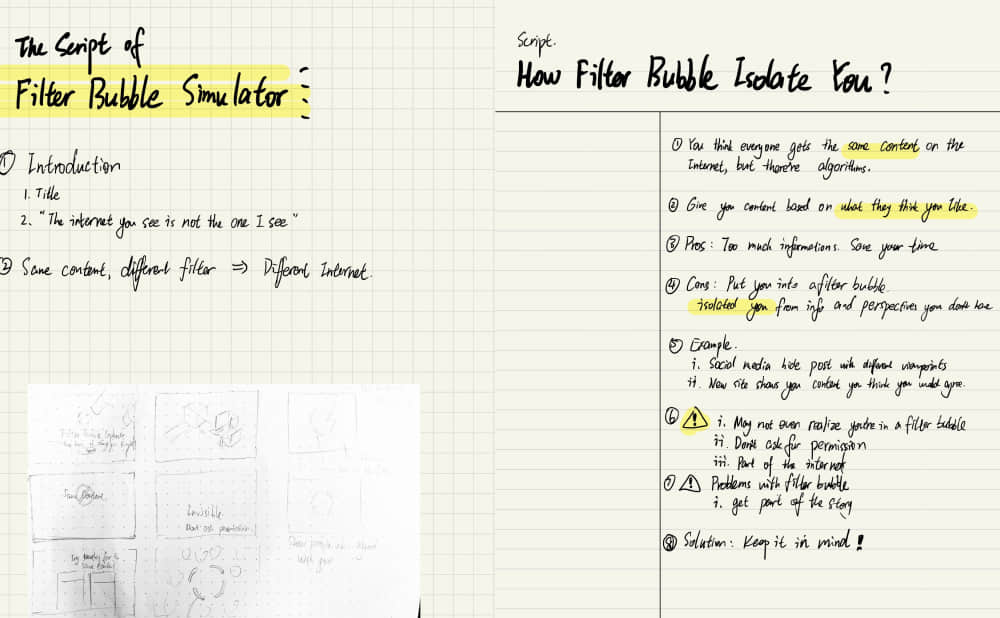
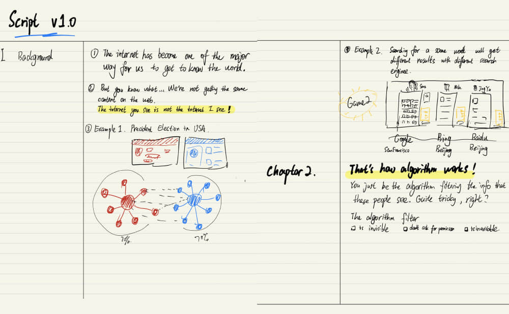
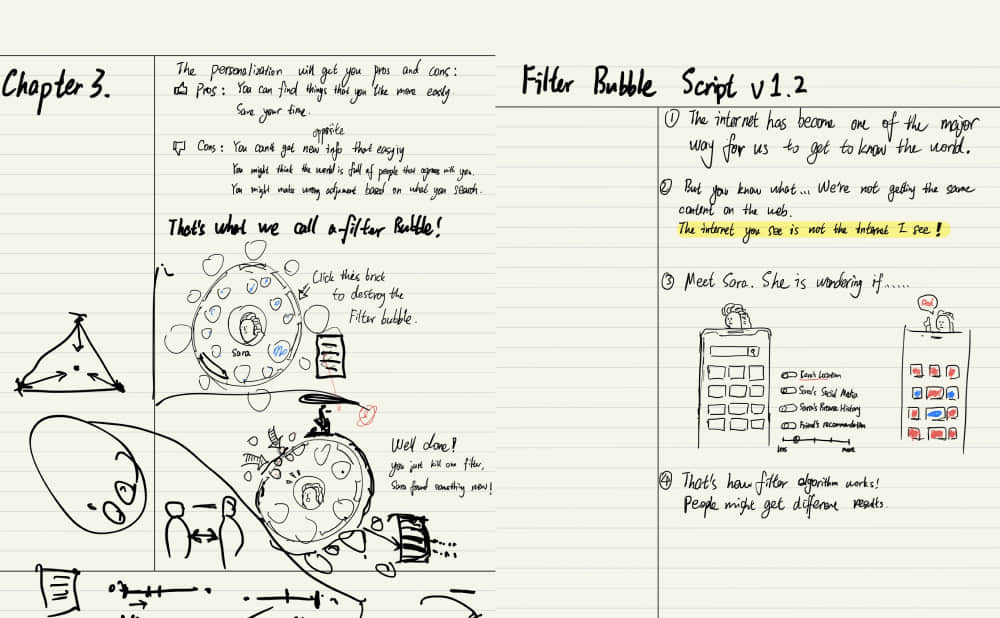
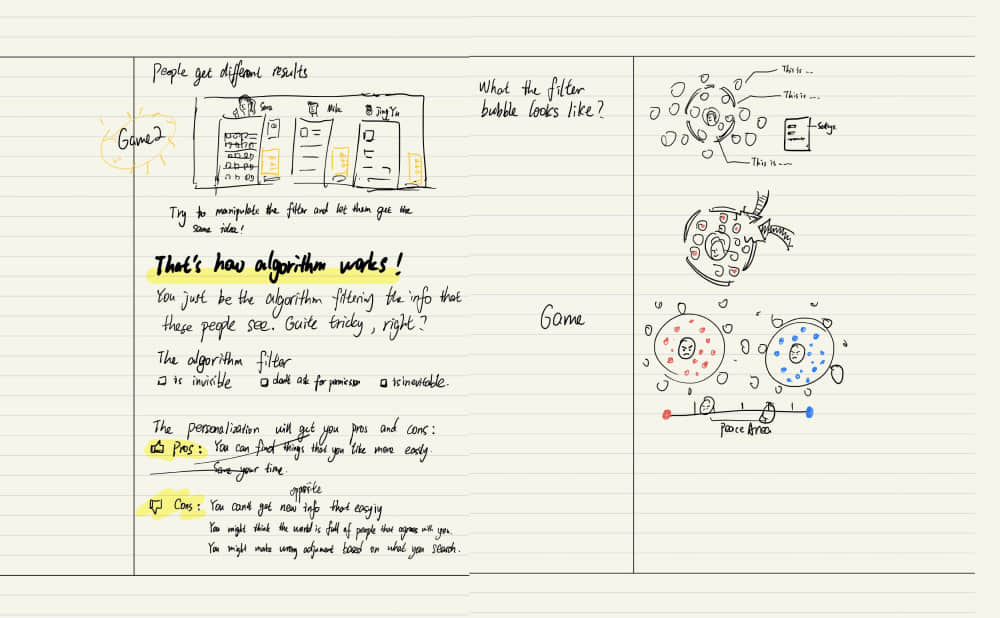
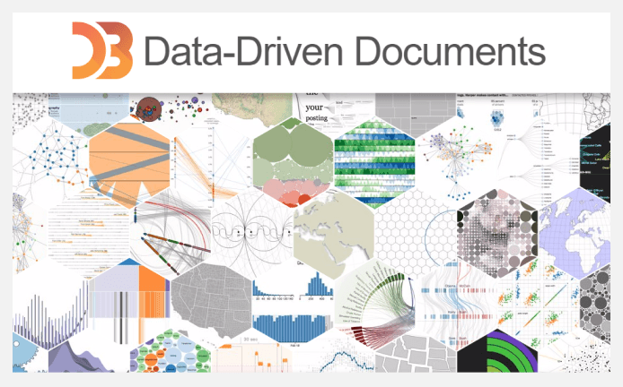

Overview
Visualizing the “Filter Bubble”
This experimental project tried to explore a way to visualize the “filter bubble”, which occurs when
websites
use algorithms to selectively give information to us according to our preferences.
The term “filter bubble” has grown into a frequent topic these years.
After being aware of it, I found that nearly every products and service we used had embed
personalized
algorithm, and therefore created an echo chamber for us.
I build this to get us thinking about our relationship with the online media, and suggest some ways
to
deal
with the “bubble trouble”.
Research
According to Eli Pariser, the inventor of this term, those algorithms create “a unique universe of
information for each of us … which fundamentally alters the way we encounter ideas and information.”
First of all, I was thinking of designing a tool that helps solve this problem, maybe a news app that
shows articles with different views. But after a quick browse, I found some inspiring projects with
similar ideas:
Findings and Insights
The first step to burst the filter bubble is to know that it exists.
The projects below require extensive work in data processing which needs real users and data. Another
concept
design couldn’t solve the problem.
But when I showed them to my friends, it always took them a while to understand the meaning. Most of
them
didn’t have a clear view of what a filter bubble is.
Real products require real data. Designing a tool may not be a good practice.
We are not familiar with how the “filter bubble” is affecting us, even we have heard of it.
Explorable explanations: Nicky Case’s “learning by playing” interactive games pattern seems
suitable,
considering I was trying to explain a complex theory and make it fun.
Ideation
Writing a script
Unlike a product design project, I started with a script from something familiar (like browsing news
on the phone) to the introduction and how it changes our perception.
I conducted some test and interview, and this script is too complicated, and the transitions didn’t
feel consistent. The interviewees started to describe their storyline, which gave me new
inspirations.




Prototyping
Finding a simple metaphor
Browsing some other explorable explanations made me realized that instead of trying to cover
everything, it
should illustrate the shift of one straightforward model. And I explored just the right visual model
through
paper-based prototype:
The squares are different types of information. If the user picks one square, it would be moved into
the
“click history” area at the right-bottom corner. And new pieces of information would enter the
bubble to
make the total number of squares stays the same.
The model was simple to understand and remember to the interviewees. And some more complicated rules
could be
implemented on top of it as “algorithms”.
Prototyping
Building the simulation
I tried to learn D3.js to make the simulation demo. D3.js is a JavaScript library for data
visualization and provides force layout that I could use to make a smooth bubble chart.
The simulation was constructed from basics. It began with merely adding and removing circles which
stand for
information, and ended with an automatic running bubble chart.

What I Learned
During the process, I learned much from both the research, design & coding and works from other designer
and
students.
First experimental project practice: There’s a considerable difference between exploration
projects and product design. Transferring an idea into script and prototype is a big challenge.
The power of a simple concept: A robust, powerful and memorable idea keeps people’s
attention, and it takes efforts to figure out.
Coding as a design skill: I learned a lot about coding to achieve my goal in this project. It
gives me confidence and ambition to try data visualization and generative art next time.
It’s fun: Creating something original from the ground up is exciting. But the result is also
very unpredictable and hard to control.